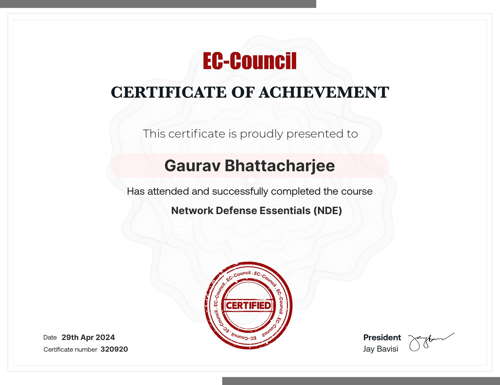
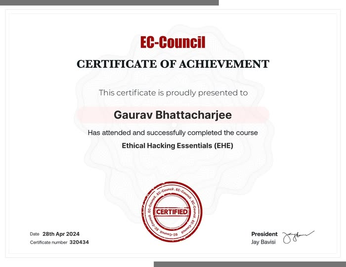
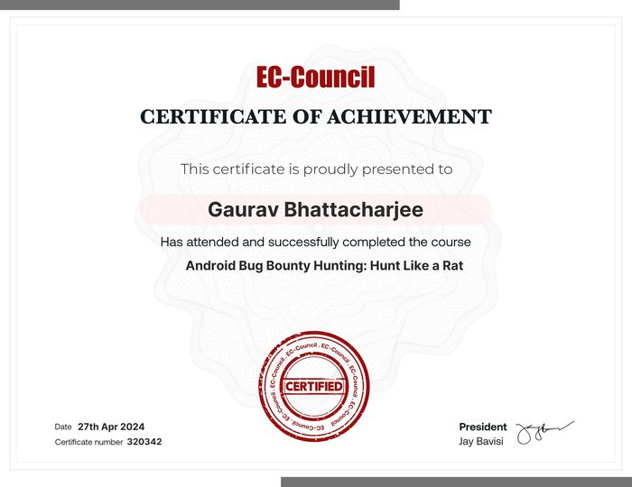
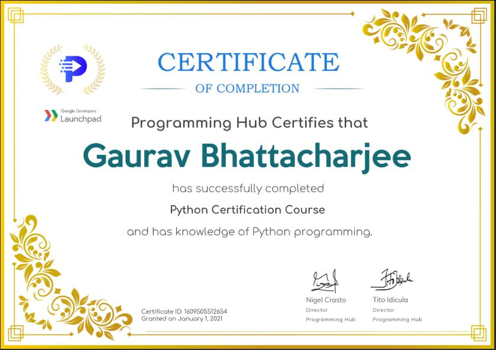
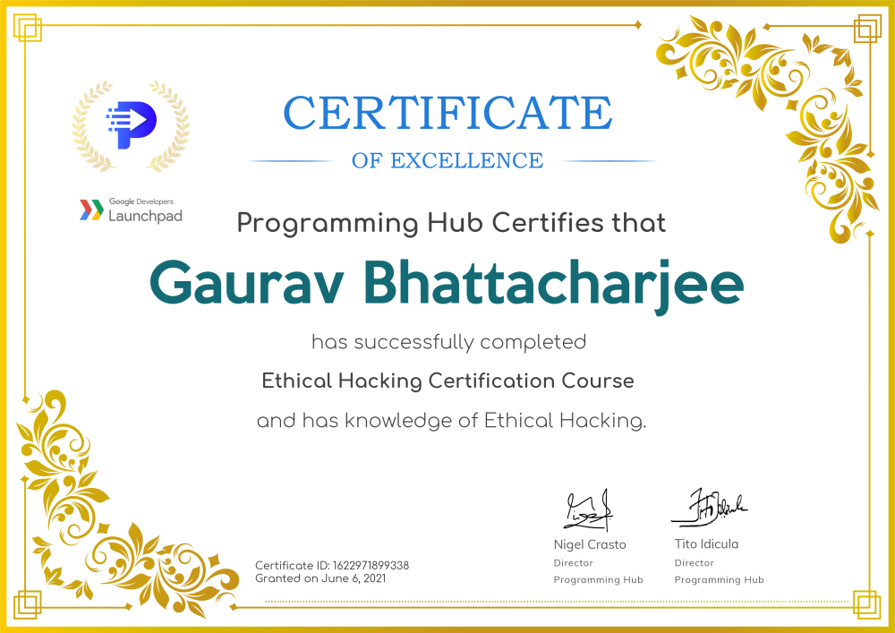
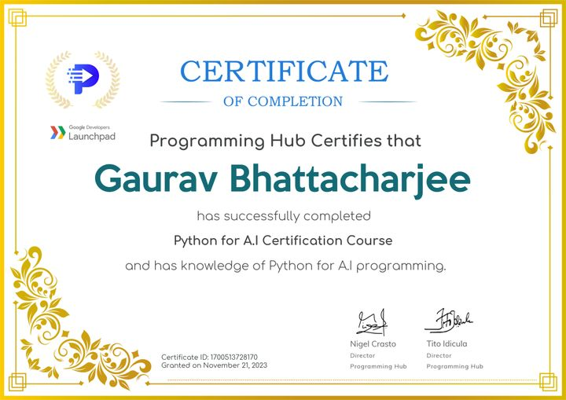
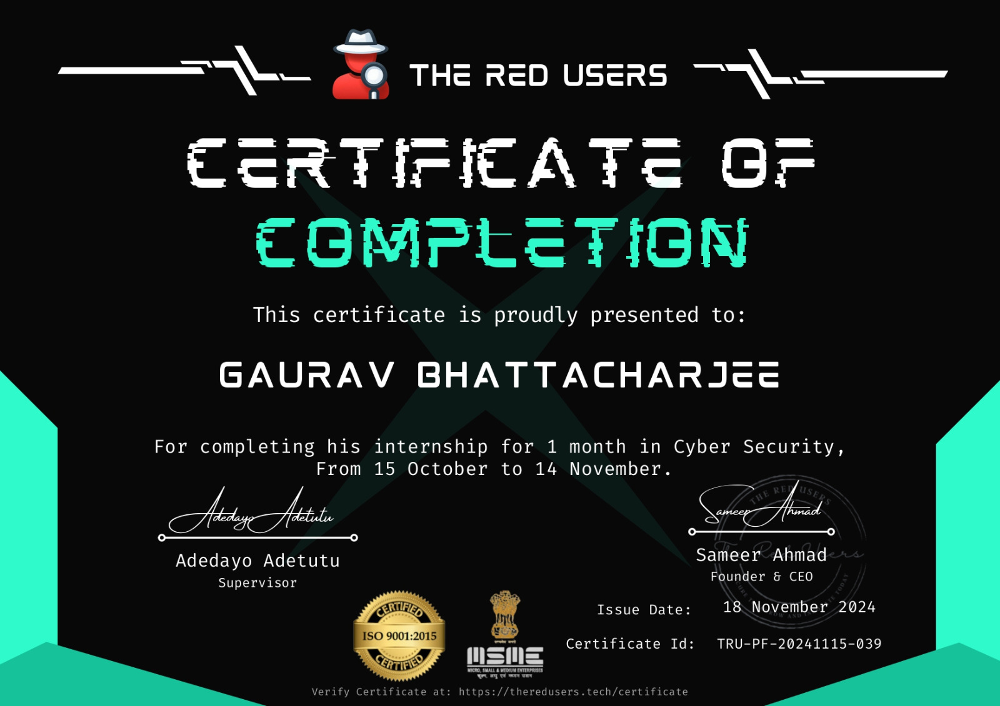

I am a cybersecurity analyst and Web Application Penetration Tester with 2 years of field expertise. My primary expertise lies in penetration testing for web applications.
Read MoreLoading latest blog...
I am a cybersecurity analyst & Web Application Penetration Tester with 2 years of field expertise. My primary expertise lies in penetration testing for web applications, where I leverage a range of advanced tools and techniques to identify and address security vulnerabilities effectively and adept at utilizing various testing tools and techniques ..
Seeking an opportunity to leverage my skills in penetration testing, vulnerability assessment to contribute to a cyber-security team .
November 2024 - Present
During my internship at CodeAlpha as a cybersecurity professional, I worked on developing Python programs to automate security tasks and improve efficiency. Alongside this, I focused on analyzing and fortifying systems against potential threats, ensuring comprehensive security measures were in place. Twitter account, where we share timely updates and insights on cyberattacks and cybersecurity trends.
November 1, 2024 - November 30, 2024
During my internship at Prodigy Infotech, I contributed to cybersecurity projects by implementing a Caesar Cipher for encryption tasks, developing pixel manipulation techniques for image encryption, creating a password complexity checker to enhance security, designing a simple keylogger for ethical hacking demonstrations, and building a network packet analyzer to monitor and analyze traffic for vulnerabilities. These projects enhanced my understanding of cryptography, secure coding, and network security practices.
October 14, 2024 - November 15, 2024
Focuses on protecting an organization's computer systems and networks from cyber threats. Responsibilities include monitoring network traffic, investigating potential security incidents, and analyzing security alerts. Also assists in conducting vulnerability assessments and penetration testing to identify security weaknesses.
Check out my collection of cybersecurity tools, penetration testing scripts, and research on my GitHub profile. I focus on developing solutions that enhance network security, automate vulnerability assessments, and improve web application security. My repositories include various tools and resources aimed at tackling real-world security challenges.
Conducting thorough vulnerability assessments and penetration tests to identify and mitigate security risks.
Analyze network traffic and security configurations to identify vulnerabilities and strengthen defenses against attacks.
Produce clear, detailed documentation and reports on security incidents, assessments, and analysis, supporting strategic decision-making and compliance efforts.
Provide specialized training to equip individuals and teams with essential cybersecurity skills, fostering a strong security culture.
Collect and analyze publicly available data to identify threats, support investigations, and strengthen threat intelligence.
Offer round-the-clock monitoring and analysis, swiftly detecting and responding to cyber threats to maintain secure operations.
I developed The Sherlock, an effective vulnerability scanner designed for website scanning. This tool is capable of identifying and assessing vulnerabilities in web applications, helping to enhance security by pinpointing potential risks and weaknesses in a website's infrastructure.
2024
Axom Security
Duration: May 2022 - September 2023
College of Applied Fine Arts (Bongaigaon University)
Duration: 2022 - 2023
National institute of Open Schooling
Year of Completion: 2022






